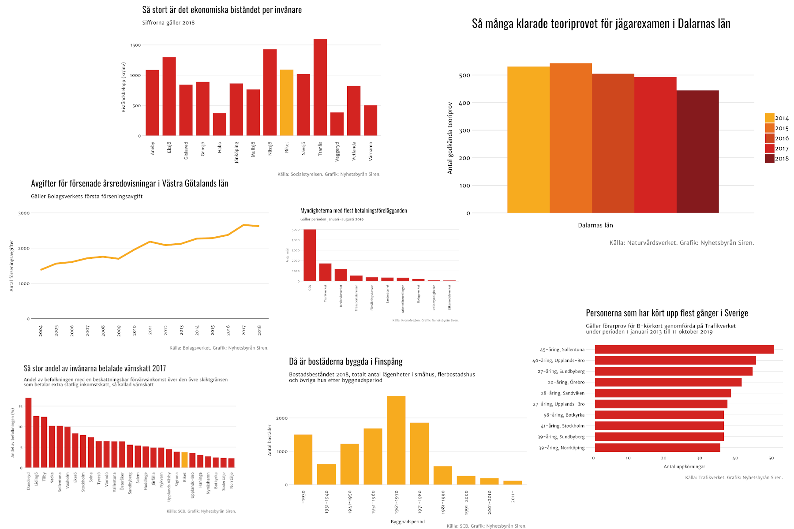

Den här instruktionen är skriven för Sirens redaktion, och kommer att uppdateras då och då med fler diagram och funktioner.
Med inspiration från BBC:s grafikguide R Cookbook och deras artikel om hur de gör grafik i R.
R är gratis och open source.
